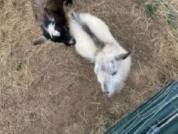
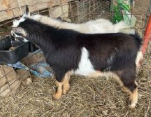
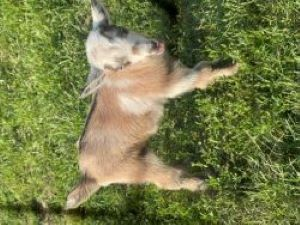

| Name: | ADGA Information: | Picture: |
|---|---|---|
| Buckley | Buck Buckskin with extensive white; Blue Eyes Polled Sire: Rivers Rest AR Outlaw J Wales Dam: Miniview Farm Speckled Adaline |
 |
| Dahlia Rose | Doe Buckskin with white poll and tail tip; Blue eyes Disbudded Sire: Mountain Ridge Fast as Lightin Dam: Lost Valley RX Talia |
 |
| Junie Bug | Doe Light buckskin, extensive white, white poll, white tail tip; Blue eyes Polled Sire: Bleating Acres Buckley Dam: Blearing Acres Lil Dahlia Rose |
 |